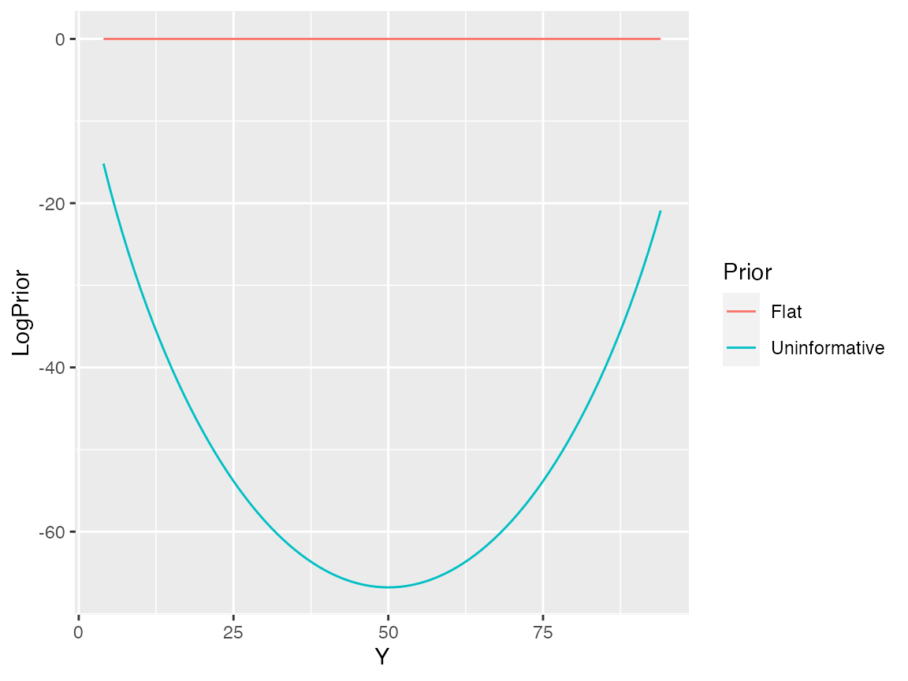
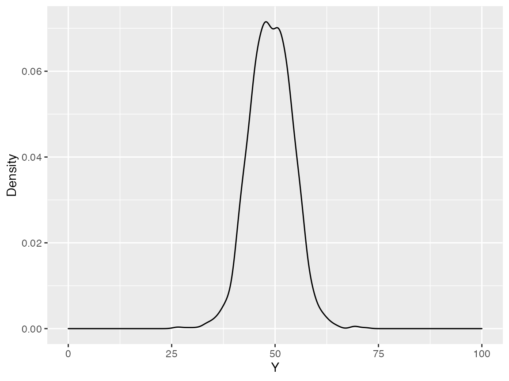
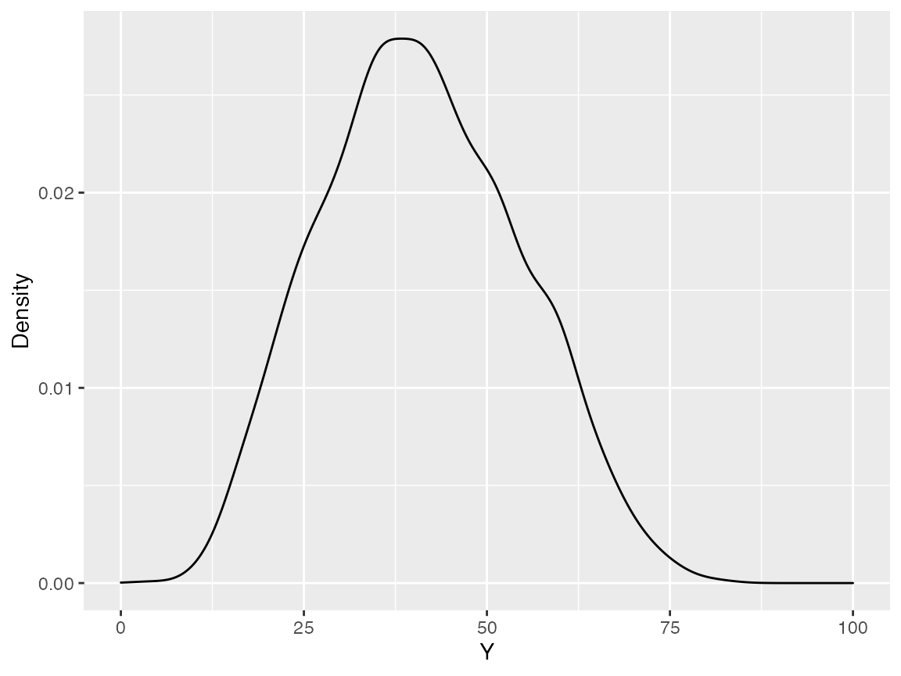

This vignette explains synthetic population sampling for the simplest case, where each individual is defined by one binary variable. The only piece of information used to inform what the population looks like is a simple random sample of size n, which can be thought of as an n-vector with sum y. Our goal is to synthesize populations of size N with sum Y.
The first thing we need is our sample, and thus we need to know our true population proportion. For starters lets fix the truth at p = 0.5, sample size at 10, and simulate a population of size 100. Lets work with a sample that has a 40%/60% split of classes.
In order to calculate the posterior, we need to decide what our likelihood and choice of prior are.
Upon first inspection our best choice for the likelihood would be a hypergeometric distribution. This distribution, Hypergeometric(N, Y, n), has a probability mass function of:
\[ \frac{{Y \choose y}{{N-Y} \choose {n-y}}}{N \choose n} \] It can be thought of as the probability of sampling y white balls in a sample of size n from a population of N balls, of which Y are white.
Since we observe a sample from the population, our population must have at least as many 1s and 0s as our sample. Let’s construct a data.frame with all the information we will need.
df <- data.frame(Y = y:(N-n+y), LogLikelihood = NA, LogPriorFlat = NA, LogPriorUninformative = NA)
for(i in 1:nrow(df)) {
df$LogLikelihood[i] <- lemur.pack:::loglik_binary_(N = N, n = n, Y = df$Y[i], y = y)
}Lets start by using a flat prior. In log space this is actually just zero.
for(i in 1:nrow(df)) {
df$LogPriorFlat[i] <- lemur.pack:::logprior_binary_flat_()
}Lets also add an uninformative prior.
for(i in 1:nrow(df)) {
df$LogPriorUninformative[i] <- lemur.pack:::logprior_binary_uninformative_(N, Y = df$Y[i])
}Now we can add the log-likelihood and log-prior to get the log-posterior for each value of Y, and create a plot.
df <- df %>%
pivot_longer(contains("LogPrior"), names_to = "Prior", names_prefix = "LogPrior",
values_to = "LogPrior") %>%
mutate(LogPosterior = LogLikelihood + LogPrior) %>%
mutate(
Likelihood = exp(LogLikelihood),
Posterior = exp(LogPosterior)
)
df <- as.data.frame(df)
Lets actually get samples. For illustration purposes, we shall first sample using a flat prior.
flat_samples <- mcmc_binary(obs, N, prior = "flat", nsteps = 2000)
Y_samples <- data.frame(Y = rowSums(flat_samples))
Note this graph is centered at Y = 50. Does this make sense, considering our sample was not evenly split? No; lets try the uninformative prior.
uninformative_samples <- mcmc_binary(obs, N, prior = "uninformative", nsteps = 2000)
Y_samples <- data.frame(Y = rowSums(uninformative_samples))